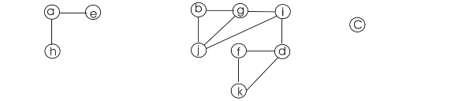

CONNECTED-COMPONENTS procedure computes a graph in such a way that it puts all the vertices of the same component in its own set. .
The algorithm for the CONNECTED-COMPONENTS is the following:
CONNECTED-COMPONENTS (G)
// loop through each of the vertices in the Graph
1. for vertex
// create sets for each of the vertices in the Graph
2.
// loop through each of the edges of the Graph
3. for
// check if both the vertices of the edge are in the same set or not
4. if
// if the vertices are not in the same set, then join the sets to form one set
5.
From the above algorithm it can be observed easily that every vertex that belongs to the graph at first gets its own set. And then for every edge, the two vertices which form the edge are brought into the same SET using the UNION procedure.
There are two perspectives to this proof.
After processing all the edges, the following two observations have to be seen:
• If two vertices are in the same set, then they are part of a connected component.
• If two vertices are part of a connected component, then they are in the same set.
Proof that if two vertices are in the same set, then they are part of a connected component:
Initially every vertex has its own set as seen from step 1 and 2 in the above algorithm. At this stage, there is no edge between any of the vertices as no edge has been looked at yet.
So, the property that if two vertices are in same set, then they are part of a connected component holds initially.
Now after processing a single edge the
following is observed:
the
following is observed:
The edges  and
and
 are put into the same set implying that they are part of a
connected component. This is true because they form an edge. So,
the property under consideration holds true even after the
processing of the first edge.
are put into the same set implying that they are part of a
connected component. This is true because they form an edge. So,
the property under consideration holds true even after the
processing of the first edge.
Let’s assume that an edge.
There are two possibilities of processing this edge:
1. before taking the union but after taking the union. This is because before the edge was seen, it was not in the same set implying that it doesn’t belong to the same component but once the edge is seen, it is processed by UNION and now it is in the same set implying that it belongs to the same component. This is true because it is an edge which means that it must be part of the same component.
2.before taking the union but after taking the union. If this could happen, then it would show that two vertices that do not belong to the same connected component were once in the same set. But it cannot happen because all that is done during the processing of the edges is either UNION them or don’t union them. If UNION is done, then the previous status of already being in the same set doesn’t change. And if UNION is not done, then obviously nothing is done in this step and so the previous status of being in the same set must prevail.
Thus, it cannot happen that two vertices which are in the same set are not in same connected component.
So, it is shown that any two vertices that are in the same set are also in the same connected component.
Proof that if two vertices are in the same connected component, then they are part of the same set:
Assume that are two vertices in the same connected component. There are other vertices in the connected component. Let them be denoted by such that is an edge. So, each edge is processed one by one using. When each instance of this is processed, they get put into the same set because they are edges and the algorithm puts the vertices of every edge into the same set. Thus after all the edges in the connected component are processed, the following is observed:
So, the set of all the vertices in the above connected component is the same.
This is because every adjacent vertex in a connected component is in the same set because they are an edge. And every other vertex in the connected component is adjacent to the initial vertex indirectly. And in turn all of them are in the same set.
Thus, it is shown that any two vertices which are in the same connected component are in the same set.
Hence, it is proved that after all the edges are processed by CONNECTED-COMPONENTS; two vertices are in the same connected component if and only if they are in the same set.